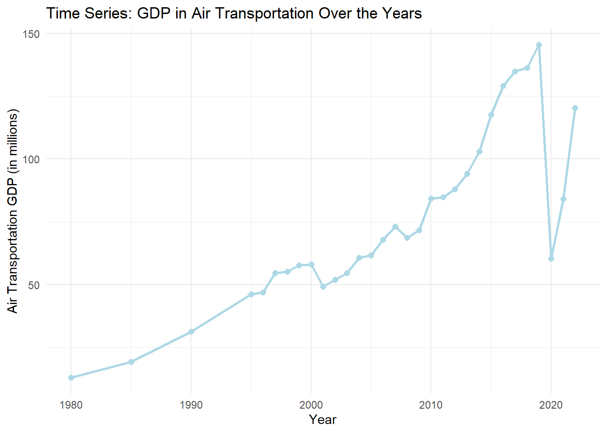
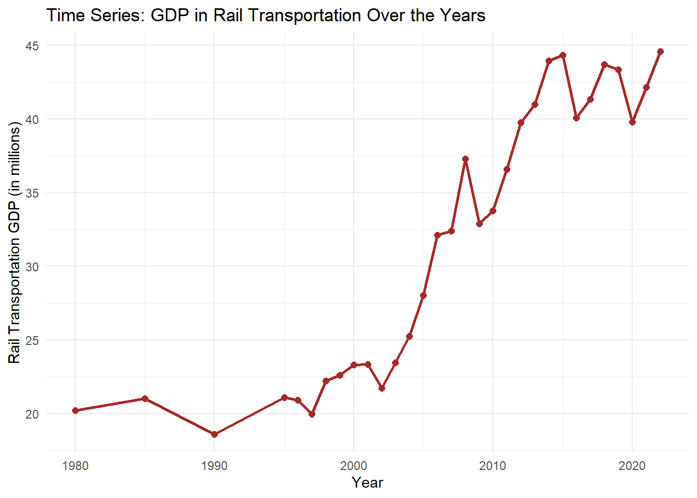
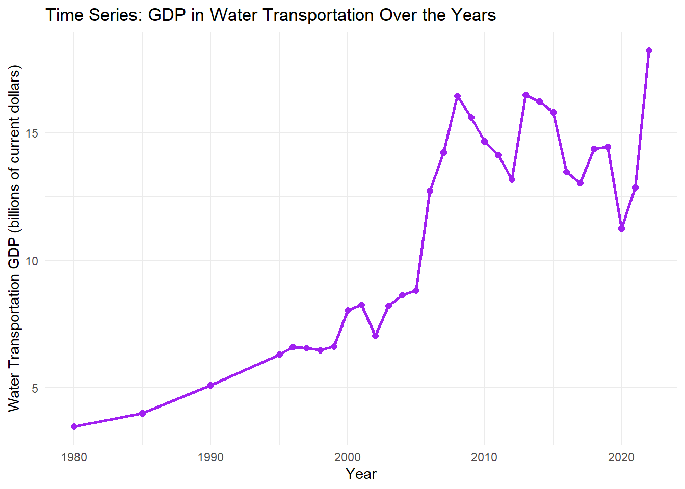
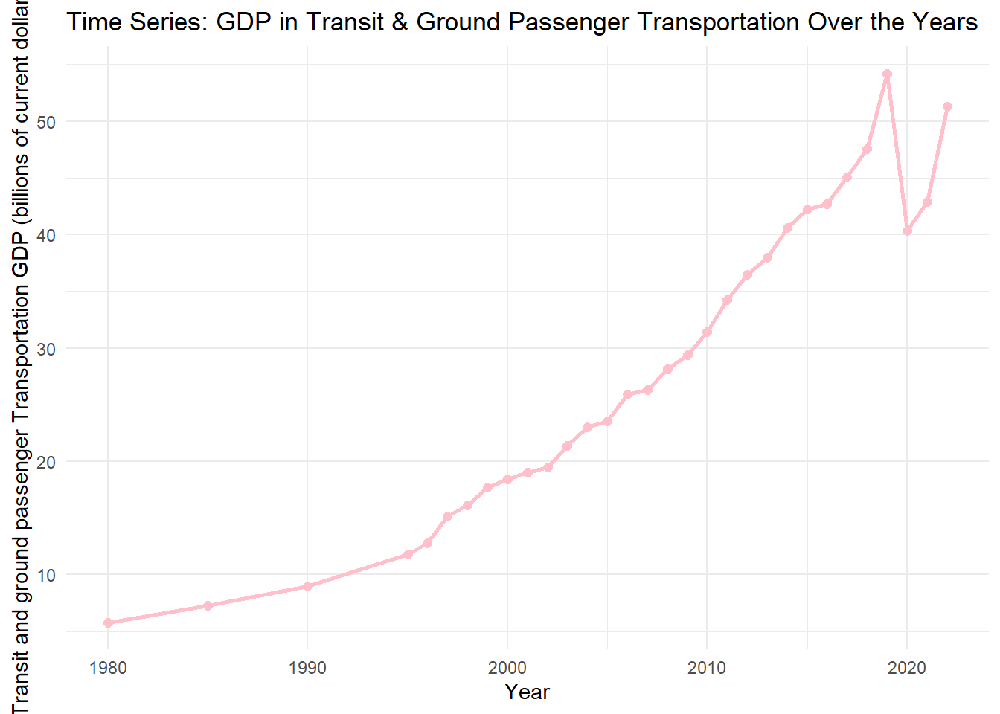
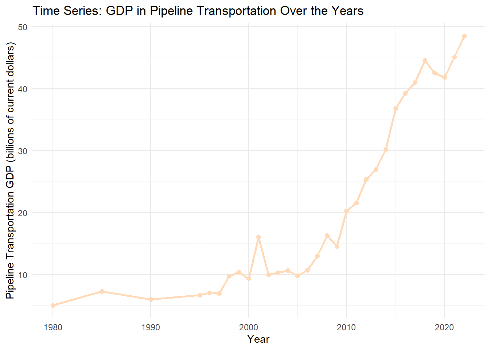
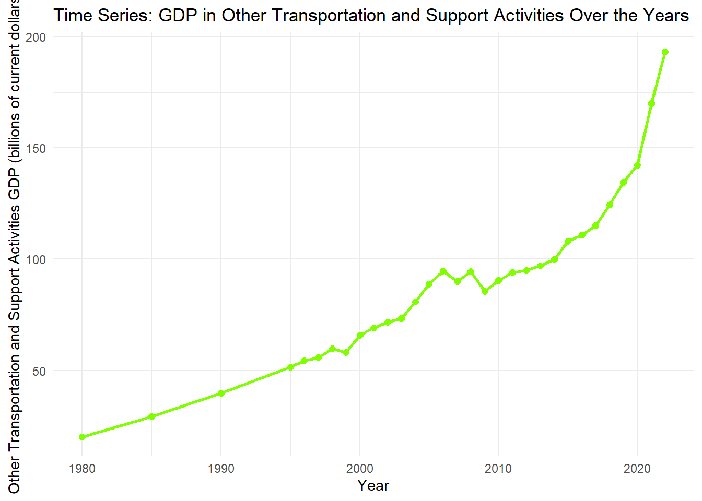
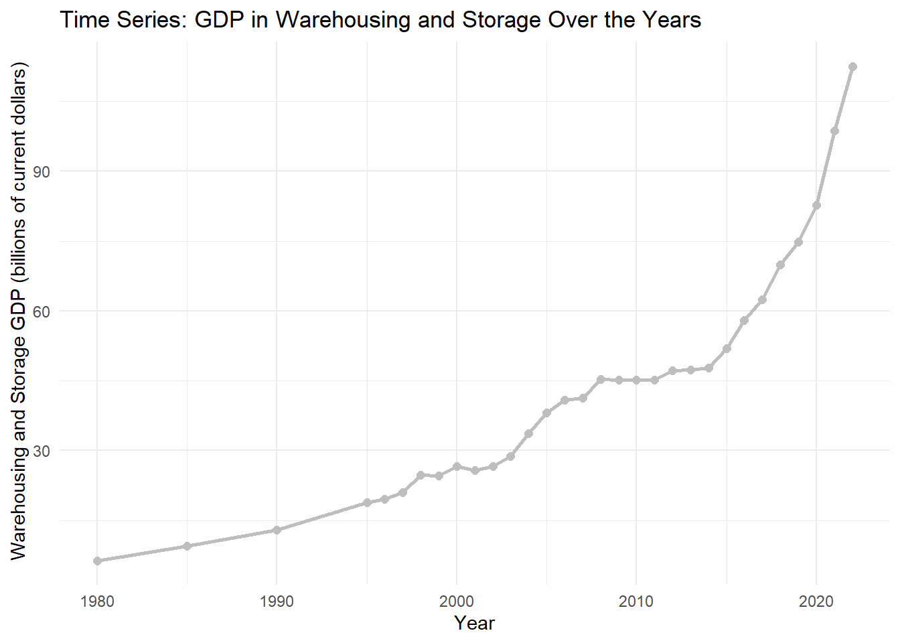

tibble [31 × 11] (S3: tbl_df/tbl/data.frame)
$ Year : num [1:31] 1980 1985 1990 1995 1996 ...
$ TOTAL U.S. GDP : num [1:31] 2788 4218 5800 7415 7838 ...
$ For-hire transportation services GDP, total: num [1:31] 103 137 173 232 241 ...
$ Air transportation : num [1:31] 13.1 19.3 31.3 46.2 46.9 ...
$ Rail transportation : num [1:31] 20.2 21 18.6 21.1 20.9 ...
$ Water transportation : num [1:31] 3.5 4 5.1 6.3 6.6 ...
$ Truck transportation : num [1:31] 28.4 39.4 49.7 69.3 73.1 ...
$ Transit and ground passenger transportation: num [1:31] 5.8 7.3 9 11.8 12.8 ...
$ Pipeline transportation : num [1:31] 5.1 7.3 6 6.7 7.1 ...
$ Other transportation and support activities: num [1:31] 20.2 29.3 39.9 51.6 54.3 ...
$ Warehousing and storage : num [1:31] 6.4 9.5 13 18.8 19.6 ...
Highlights the event on 2007-2008 and 2019-2022 In 2007, an economic crisis has shown that is called as the great recession. Then in 2019, the Covid-19 pandemic has started and spreading all around the world. In this analysis using the time series, we will see the impact they will cause to the U.S. Gross Domestic Product (GDP) Attributed to For-Hire Transportation Services.
mydata <- mydata %>%mutate(Year =as.numeric(Year),`Air transportation`=as.numeric(gsub(",", ".", `Air transportation`)))# Plot with ggplot2ggplot(mydata, aes(x = Year, y =`Air transportation`)) +geom_line(color ="lightblue", size =1) +geom_point(color ="lightblue", size =2) +labs(title ="Time Series: GDP in Air Transportation Over the Years",x ="Year",y ="Air Transportation GDP (in millions)" ) +theme_minimal()
Warning: Using `size` aesthetic for lines was deprecated in ggplot2 3.4.0.
ℹ Please use `linewidth` instead.

Key Insights for Air Transportation Over the Years There has been a significant decrease from 2019 to 2020. Covid-19 would be the reason of decrease in total GDP for air transportation. However other than that, there has been a decrease in 2000 to 2001 and 2007 to 2008. In 2007, there has been a recession in US, that also has impacted the other countries as well.
mydata <- mydata %>%mutate(Year =as.numeric(Year),`Rail transportation`=as.numeric(gsub(",", ".", `Rail transportation`)))# Plot with ggplot2ggplot(mydata, aes(x = Year, y =`Rail transportation`)) +geom_line(color ="brown", size =1) +geom_point(color ="brown", size =2) +labs(title ="Time Series: GDP in Rail Transportation Over the Years",x ="Year",y ="Rail Transportation GDP (in millions)" ) +theme_minimal()

Key Insights for Rail Transportation Over the Years In the rail transportation, the decrease that is easily notice is both 2008 to 2009 and 2019 to 2020, however the impact of the recession makes rail transportation to produce less GDP, rather than during Covid-19.
mydata <- mydata %>%mutate(Year =as.numeric(Year),`Water transportation`=as.numeric(gsub(",", ".", `Water transportation`)))# Plot with ggplot2ggplot(mydata, aes(x = Year, y =`Water transportation`)) +geom_line(color ="purple", size =1) +geom_point(color ="purple", size =2) +labs(title ="Time Series: GDP in Water Transportation Over the Years",x ="Year",y ="Water Transportation GDP (billions of current dollars)" ) +theme_minimal()

Key Insights for Water Transportation Over the Years Looking at the time series analysis for water transportation, it shows that from 2008 to 2012 there’s a constant decreasing trends where they produce less and less GDP. This decrease that happen might be the effect of the recession that impacted the world.
mydata <- mydata %>%mutate(Year =as.numeric(Year),`Truck transportation`=as.numeric(gsub(",", ".", `Truck transportation`)))# Plot with ggplot2ggplot(mydata, aes(x = Year, y =`Truck transportation`)) +geom_line(color ="darkgreen", size =1) +geom_point(color ="darkgreen", size =2) +labs(title ="Time Series: GDP in Truck Transportation Over the Years",x ="Year",y ="Truck Transportation GDP (billions of current dollars)" ) +theme_minimal()
Key Insights for Truck Transportation Over the Years From 2007 to 2009, a slight slowdown in GDP growth is noticeable, reflecting the impact of the Great Recession. After 2009, there’s a gradual but steady recovery, with notable growth starting around 2015. Covid-19 in 2020 results in a brief decline in GDP, followed by a strong recovery as demand for goods transportation surges.
mydata <- mydata %>%mutate(Year =as.numeric(Year),`Transit transportation`=as.numeric(gsub(",", ".", `Transit and ground passenger transportation`)))# Plot with ggplot2ggplot(mydata, aes(x = Year, y =`Transit and ground passenger transportation`)) +geom_line(color ="pink", size =1) +geom_point(color ="pink", size =2) +labs(title ="Time Series: GDP in Transit & Ground Passenger Transportation Over the Years",x ="Year",y ="Transit and ground passenger Transportation GDP (billions of current dollars)" ) +theme_minimal()

Key Insights for Tranist & Ground Passenger Transportation Over the Years Transit and ground passenger transportation experiences some slowdown during the Great Recession (2007-2009), indicating reduced passenger demand. After 2009, the GDP growth picks up gradually until a sharp decline in 2020 due to Covid-19 restrictions.The impact of Covid-19 is significant, with a slow recovery afterward, reflecting lingering effects on passenger transport demand.
mydata <- mydata %>%mutate(Year =as.numeric(Year),`Pipeline transportation`=as.numeric(gsub(",", ".", `Pipeline transportation`)))# Plot with ggplot2ggplot(mydata, aes(x = Year, y =`Pipeline transportation`)) +geom_line(color ="peachpuff", size =1) +geom_point(color ="peachpuff", size =2) +labs(title ="Time Series: GDP in Pipeline Transportation Over the Years",x ="Year",y ="Pipeline Transportation GDP (billions of current dollars)" ) +theme_minimal()

Key Insights for Pipeline Transportation Over the Years The Great Recession in 2007 to 2009 shows only a mild impact on GDP, with the sector maintaining a steady upward trend despite economic challenges.After 2009, growth accelerates gradually, reflecting stable demand and resilience in pipeline transportation.A brief decline around 2020 due to Covid-19 is observed, followed by a quick recovery and continued growth.
mydata <- mydata %>%mutate(Year =as.numeric(Year),`Other transportation and support activities`=as.numeric(gsub(",", ".", `Other transportation and support activities`)))# Plot with ggplot2ggplot(mydata, aes(x = Year, y =`Other transportation and support activities`)) +geom_line(color ="chartreuse", size =1) +geom_point(color ="chartreuse", size =2) +labs(title ="Time Series: GDP in Other Transportation and Support Activities Over the Years",x ="Year",y =" Other Transportation and Support Activities GDP (billions of current dollars)" ) +theme_minimal()

Key Insights for Other Transportation & Support Activities Over the Years From 2007 to 2009, GDP in this sector shows a slight dip, reflecting the economic strain of the Great Recession. There is a steady increase in GDP after 2009, with a significant acceleration in growth beginning around 2015. A noticeable drop appears around 2020 due to Covid-19, but the sector quickly recovers and continues to rise afterward.
mydata <- mydata %>%mutate(Year =as.numeric(Year),`Warehousing and storage`=as.numeric(gsub(",", ".", `Warehousing and storage`)))# Plot with ggplot2ggplot(mydata, aes(x = Year, y =`Warehousing and storage`)) +geom_line(color ="grey", size =1) +geom_point(color ="grey", size =2) +labs(title ="Time Series: GDP in Warehousing and Storage Over the Years",x ="Year",y =" Warehousing and Storage GDP (billions of current dollars)" ) +theme_minimal()

Key Insights for Warehousing & Storage Over the Years GDP growth in warehousing and storage remains largely unaffected during the 2007-2009 recession, with a consistent upward trend. From 2009, the sector experiences steady growth, with demand likely driven by e-commerce and inventory needs. In 2020 indicates the impact of Covid-19, but recovery is quick, and growth continues at an accelerated rate post-pandemic.
Conclusion Most of them in 2019-2020 has a decrease in their GDP due to Covid-19 that happened all around the world. Each of the graph emphasizes the patterns of adaptation and recovery across several transportation sectors.